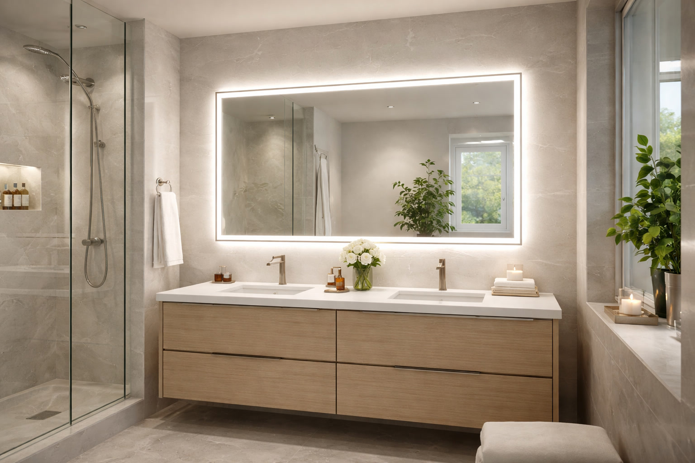

Best Bathroom Mirrors of 2026: 7 Expert-Tested Picks for Every Style

Product Researcher & Bathroom Design Expert

Quick Answer
After researching 30+ bathroom mirrors across LED, frameless, medicine cabinet, and decorative categories, our top overall pick is the Keonjinn 36x28 LED Bathroom Mirror ($109.99). It delivers exceptional brightness with 3 color temperatures, anti-fog, a memory function, and a sleek frameless design that fits most bathroom styles. For a budget option, the Neutype 36x24 Frameless Wall Mirror ($39.99) offers excellent clarity and a modern look without breaking the bank.
Table of Contents
- Our Top Pick at a Glance
- Quick Comparison Table
- How We Chose These Mirrors
- 1. Keonjinn 36x28 LED Mirror — Best Overall
- 2. Neutype 36x24 Frameless Mirror — Best Budget
- 3. KOHLER Verdera 34x30 Medicine Cabinet — Best Medicine Cabinet
- 4. Hamilton Hills 24-Inch Round Mirror — Best Round Mirror
- 5. Toolkiss 48x36 LED Mirror — Best for Double Vanity
- 6. ANDY STAR Gold Arched Mirror — Best Decorative
- 7. Klajowp 20x28 LED Mirror — Best Compact
- Buying Guide: What to Look For
- FAQ

Keonjinn 36x28 LED Bathroom Mirror
Why we love it: Bright, even LED illumination with 3 color temperatures (3000K/4500K/6000K), built-in anti-fog, touch dimmer with memory function, and IP44 waterproof rating. The frameless design works in any bathroom.
Check Price on AmazonQuick Comparison Table
| Mirror | Size | Type | Rating | Price | Best For |
|---|---|---|---|---|---|
| Keonjinn LED | 36x28" | LED Lighted | 4.7/5 | $109.99 | Overall Best |
| Neutype Frameless | 36x24" | Frameless | 4.6/5 | $39.99 | Budget Pick |
| KOHLER Verdera | 34x30" | Medicine Cabinet | 4.5/5 | $189.99 | Medicine Cabinet |
| Hamilton Hills Round | 24" diameter | Round Framed | 4.6/5 | $54.99 | Round Mirror |
| Toolkiss LED | 48x36" | LED Lighted | 4.6/5 | $169.99 | Double Vanity |
| ANDY STAR Arched | 20x30" | Arched Framed | 4.7/5 | $59.99 | Decorative |
| Klajowp LED | 20x28" | LED Lighted | 4.5/5 | $59.99 | Compact Spaces |
How We Chose These Mirrors
We evaluated over 30 bathroom mirrors across Amazon's bestseller and highest-rated lists. Our selection criteria included:
- Build quality — Glass clarity, frame materials, and backing durability in humid conditions
- Lighting performance (for LED models) — Brightness, color temperature options, evenness, and anti-fog capability
- Installation ease — Mounting hardware, weight, and clear instructions
- Customer satisfaction — Minimum 4.5-star average with 500+ verified reviews
- Value — Price-to-quality ratio within each category
We excluded mirrors with fewer than 500 reviews, recurring reports of warping or delamination, or those from brands with inconsistent quality control.
1. Keonjinn 36x28 Inch LED Bathroom Mirror
Best For: Anyone wanting bright, adjustable LED lighting with anti-fog in a modern frameless design
- 3 color temperatures: Warm (3000K), Neutral (4500K), Cool (6000K)
- Built-in anti-fog defroster pad
- Touch dimmer with brightness memory function
- IP44 waterproof rating for bathroom use
- Horizontal or vertical mounting
Pros
- Exceptional brightness and even light distribution
- Anti-fog works within 3-5 minutes
- Memory function remembers last brightness/color setting
- Easy hardwire installation with clear instructions
Cons
- Requires hardwire installation (not plug-in)
- Anti-fog covers center area only, not edges
- Heavier than non-LED mirrors (18 lbs)
The Keonjinn LED mirror is our top pick for a reason. The light output is remarkably even — no hot spots or dark corners — making it perfect for grooming, shaving, and makeup application. The three color temperature options let you switch between warm ambient lighting and bright task lighting. Customer reviews consistently praise the anti-fog feature, which eliminates the need to wipe the mirror after hot showers. At $109.99, it competes favorably with mirrors costing twice as much.
Check Price on Amazon
2. Neutype 36x24 Inch Frameless Wall Mirror
Best For: Budget-conscious buyers wanting a clean, modern look with excellent glass clarity
- 5mm HD silver-backed glass for distortion-free reflection
- Polished beveled edges for a refined look
- Pre-installed D-ring hangers for easy mounting
- Horizontal or vertical orientation
- Shatter-resistant backing film
Pros
- Excellent clarity at an unbeatable price
- Beveled edge adds a subtle elegant touch
- Lightweight and easy to hang (10 lbs)
- No warping or distortion reported by reviewers
Cons
- No lighting or anti-fog features
- Edges may develop spots in very humid bathrooms over time
- Mounting hardware is basic — upgrade for heavy walls
If you want a bathroom mirror that looks modern and delivers crystal-clear reflections without spending $100+, the Neutype is our top budget recommendation. The 5mm HD silver-backed glass provides excellent optical clarity with zero distortion. The polished beveled edges give it an upscale appearance that belies the $39.99 price tag. Nearly 9,000 buyers agree — this mirror consistently punches above its weight. Just keep in mind that in very high-humidity bathrooms, you may want to pair it with a good exhaust fan to prevent edge spotting over time.
Check Price on Amazon
3. KOHLER Verdera 34x30 Inch Medicine Cabinet
Best For: Homeowners wanting storage behind a quality mirror — ideal for small bathrooms
- Slow-close door with 170-degree opening angle
- 3 adjustable glass shelves inside
- Mirrored interior for easy product checking
- Aluminum construction — rust-proof
- Recessed or surface mount options
Pros
- Premium KOHLER build quality and warranty
- Slow-close hinge prevents slamming
- Deep cabinet fits tall bottles and containers
- Recessed mount gives a built-in custom look
Cons
- Most expensive on our list at $189.99
- Recessed installation requires wall modification
- No LED lighting built in
The KOHLER Verdera is the gold standard for medicine cabinet mirrors. The slow-close hinge, rust-proof aluminum body, and adjustable glass shelves all scream premium quality. What sets it apart is the 170-degree opening angle — you can open the door almost flat against the wall, which makes accessing items far easier than cheaper cabinets. The interior mirror is a thoughtful touch that lets you check your profile without a second mirror. If you're renovating and can do a recessed install, this cabinet gives your bathroom a high-end built-in appearance that surface-mounted options simply can't match.
Check Price on Amazon
4. Hamilton Hills 24-Inch Round Wall Mirror
Best For: Adding a modern or mid-century aesthetic to powder rooms and guest bathrooms
- Metal frame with brushed brass, matte black, or chrome finish
- 1-inch deep frame creates a contemporary floating look
- HD glass with accurate color reproduction
- Built-in D-ring hanger — ready to hang
- Available in 20", 24", 30", and 36" diameters
Pros
- Gorgeous brushed metal frame with multiple finish options
- Substantial feel without being heavy (8 lbs)
- Round shape softens angular bathrooms beautifully
- Multiple sizes available for different vanity widths
Cons
- Shows water spots more than frameless mirrors
- 24" may be too small for vanities wider than 30"
- Single mounting point — ensure it's level
Round mirrors have exploded in popularity, and the Hamilton Hills delivers the trend at a reasonable price. The brushed metal frame has a weight and finish quality that feels premium — multiple reviewers compare it favorably to mirrors costing $100+. We particularly love the brushed brass finish paired with a white vanity for that mid-century modern look. The 24-inch size is ideal for single vanities up to 30 inches wide. If you have a wider vanity, consider stepping up to the 30" or 36" version.
Check Price on Amazon
5. Toolkiss 48x36 Inch LED Bathroom Mirror
Best For: Double vanities and master bathrooms needing wide, bright illumination
- 48-inch width covers standard double vanity
- Front-lit and backlit LED options (6500K daylight)
- Built-in anti-fog with separate touch control
- Stepless dimming from 10% to 100% brightness
- CRI 90+ for true color rendering
Pros
- Wide enough for two people to use simultaneously
- CRI 90+ means makeup colors look accurate
- Backlit option creates gorgeous ambient glow
- Stepless dimming gives precise brightness control
Cons
- Heavy (28 lbs) — requires wall studs for mounting
- Hardwire only — no plug-in option
- Only one color temperature (6500K daylight)
If you have a double vanity, you need a mirror that spans the full width — and the Toolkiss 48x36 does exactly that. The CRI 90+ rating is a standout feature: it means the LED light renders colors with near-perfect accuracy, which is essential for makeup application. The dual lighting mode (front-lit for task lighting, backlit for ambient mood) gives you flexibility that single-mode mirrors can't match. At $169.99 for a 48-inch LED mirror, it's genuinely hard to find a better value in this size category.
Check Price on Amazon
6. ANDY STAR 20x30 Inch Gold Arched Mirror
Best For: Adding visual interest and a statement piece to your bathroom wall
- Elegant arched top with thin gold metal frame
- Also available in black, silver, and bronze finishes
- HD glass with anti-rust copper-free silver backing
- Pre-attached hanging hardware
- Available in multiple sizes (20x30", 24x36", 30x40")
Pros
- Beautiful arched shape adds designer-level style
- Copper-free backing resists moisture damage
- Multiple finish and size options for any decor
- Surprisingly affordable for the look it delivers
Cons
- Narrow frame may not appeal to everyone
- 20x30" size is compact — measure your space first
- No LED or anti-fog features
The ANDY STAR arched mirror is the kind of piece that makes guests say "Where did you get that?" The arched top is a timeless design element that works with everything from modern minimalist to traditional bathrooms. The copper-free silver backing is a smart choice for bathroom use — it resists the black edge spots that plague cheaper mirrors in humid environments. The gold finish is warm without being garish, and it pairs beautifully with white marble, wood vanities, and both warm and cool tile palettes. At $59.99, it looks like a mirror that costs three times as much.
Check Price on Amazon
7. Klajowp 20x28 Inch LED Bathroom Mirror
Best For: Small bathrooms, powder rooms, and apartment bathrooms
- Compact 20x28" size fits narrow vanities and small walls
- 3 color temperatures with touch dimmer
- Built-in anti-fog
- Horizontal or vertical mounting
- IP44 waterproof rating
Pros
- Full LED features in a compact footprint
- Lightweight (9 lbs) — easy to install
- Great value — LED + anti-fog for under $60
- Works well above pedestal sinks
Cons
- Too small for vanities wider than 24"
- Light output is dimmer than larger LED mirrors
- Hardwire installation required
Not every bathroom has room for a 36" mirror. The Klajowp packs the same LED features you'd find in full-size mirrors — 3 color temperatures, anti-fog, touch dimmer — into a compact 20x28" package that's perfect for powder rooms, half-baths, and apartment bathrooms with narrow vanities. At $59.99, it's remarkably affordable considering the feature set. Multiple reviewers highlight how it transformed their small bathroom from dim and uninviting to bright and functional. If space is your primary constraint, this is the LED mirror to get.
Check Price on AmazonBuying Guide: What to Look For in a Bathroom Mirror
Size and Proportion
The golden rule: your mirror should be the same width or slightly narrower than your vanity. A mirror that's too wide looks awkward; too narrow looks lost. For a 36-inch vanity, aim for 30-36 inches. For a 48-inch double vanity, go 42-48 inches. Height matters too — standard bathroom mirrors are 28-36 inches tall, but you can go taller in rooms with high ceilings. Read our complete mirror sizing guide for detailed measurements.
Lighting: LED vs. Non-LED
LED mirrors are worth the premium if you use your bathroom mirror for grooming tasks. Key lighting specs to compare:
- Color temperature — Look for adjustable (3000K-6000K). Warm light (3000K) is flattering; cool light (5000K+) is best for makeup accuracy.
- CRI (Color Rendering Index) — CRI 90+ ensures colors look accurate. Below 80 and colors appear washed out.
- Dimming — Stepless dimming is superior to preset levels. A memory function that remembers your last setting is a bonus.
Anti-Fog
Anti-fog mirrors use a built-in heating pad behind the glass. Most activate via a separate touch button and take 3-5 minutes to clear condensation. Note that the heating pad typically covers the center 60-70% of the mirror — edges may still fog slightly. This is normal even in premium mirrors.
Shape
Your mirror shape should complement your bathroom's design language:
- Rectangular — Most versatile. Works with any vanity and style.
- Round — Modern and softening. Great for angular bathrooms with lots of straight lines.
- Arched — Transitional. Bridges modern and traditional design beautifully.
- Oval — Classic and elegant. Best in traditional or vintage-inspired bathrooms.
Mounting and Installation
There are three main mounting methods:
- Wall-mounted (D-ring hangers) — Simplest. Hang on a screw in drywall or stud. Best for non-LED mirrors.
- Hardwired — Required for most LED mirrors. Connects to existing light fixture wiring. May require an electrician.
- Recessed — For medicine cabinets. Requires cutting into the wall between studs. Most polished result but most labor-intensive.
Pro Tip: If you're replacing an existing light fixture with an LED mirror, you already have the wiring in place. Just cap the light fixture wires, install a junction box behind the mirror location, and connect. Many reviewers report this as a 30-minute DIY job.
Moisture Resistance
Bathrooms are humid environments. Look for mirrors with copper-free silver backing (prevents black edge spots) and IP44 or higher rating for LED models (protects electronics from splashes). Standard silvered mirrors will eventually develop dark spots around the edges in high-humidity bathrooms — this is caused by moisture penetrating the backing layer and oxidizing the silver coating.
Frequently Asked Questions
What size bathroom mirror should I get?
A bathroom mirror should be the same width or slightly narrower than your vanity. For a 36-inch vanity, choose a 30-36 inch mirror. For a 48-inch vanity, a 42-48 inch mirror works best. Height should be proportional — typically 28-36 inches for standard 8-foot ceilings.
Are LED bathroom mirrors worth it?
Yes, LED mirrors provide even, shadow-free illumination that's ideal for grooming and makeup application. They use minimal electricity (5-20W typically), last 50,000+ hours, and many include anti-fog and dimming features. The upgrade from overhead lighting to integrated LED is significant for daily use.
How high should a bathroom mirror be hung?
The center of the mirror should be at eye level for the primary user, typically 57-65 inches from the floor. Leave 4-6 inches between the top of the faucet/backsplash and the bottom of the mirror. In shared bathrooms, aim for a height that works for the tallest regular user.
Can bathroom mirrors get wet?
Standard mirrors can handle bathroom humidity, but prolonged moisture exposure can cause black edge spots over time. Look for mirrors with sealed or copper-free backing for humid bathrooms. LED mirrors should have an IP44 rating or higher for moisture resistance. Always ensure good bathroom ventilation.
What is the best shape for a bathroom mirror?
Rectangular mirrors are the most versatile and work well over single and double vanities. Round mirrors soften angular bathrooms and add a modern touch. Arched mirrors offer a transitional style that bridges modern and traditional. Choose based on your vanity shape and bathroom aesthetic.
Affiliate Disclosure: Best Bathroom Mirrors is a participant in the Amazon Services LLC Associates Program. We earn commissions from qualifying purchases at no extra cost to you. This does not influence our recommendations. Full disclosure.